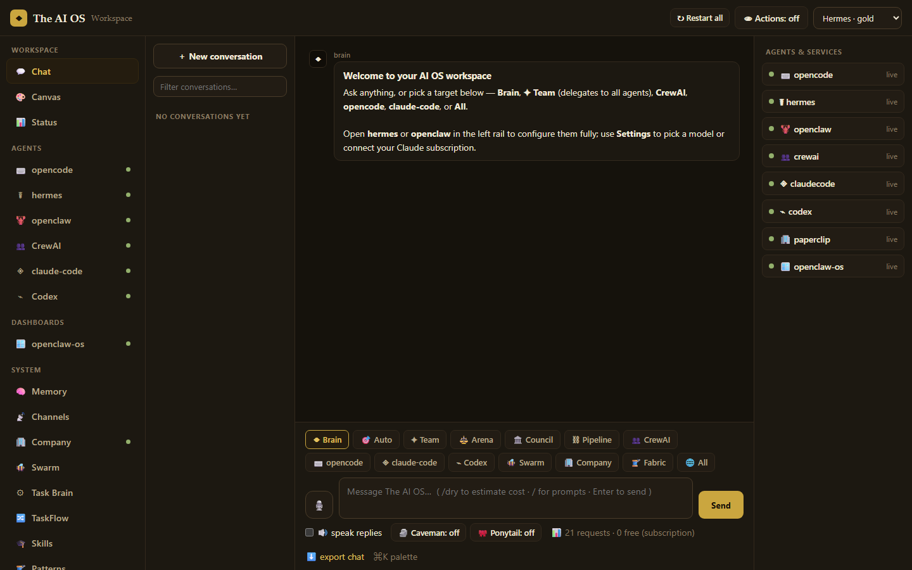
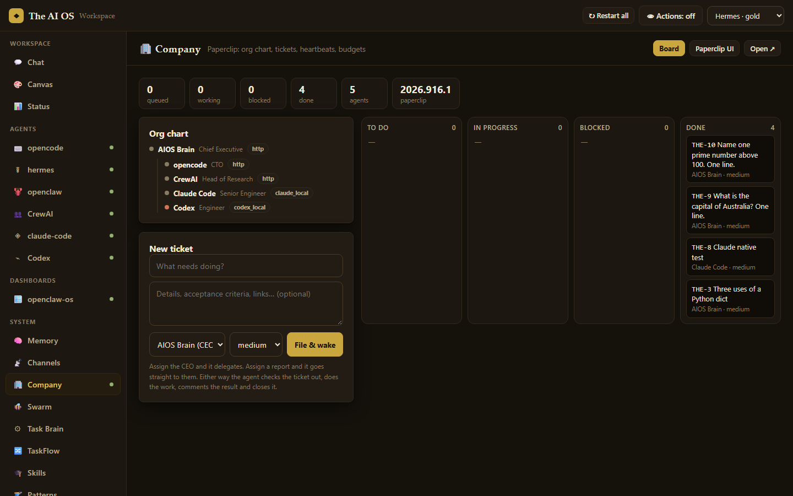
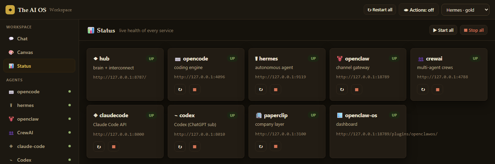

MIT · Windows first · Linux, macOS, WSL, Docker
Open-source AI agents, installed, wired and run as one system.
One CLI installs opencode, Hermes, OpenClaw, CrewAI, Claude Code, Codex and Paperclip, points them all at one model config, and connects them through a hub on :8787. From there you talk to any of them, hand a job to the whole team, or file it as a ticket and let the org chart handle it.
PS> irm https://raw.githubusercontent.com/ZDStudios/AIOS/main/install.ps1 | iex
$ curl -fsSL https://raw.githubusercontent.com/ZDStudios/AIOS/main/install.sh | bash
$ docker pull ghcr.io/zdstudios/aios:latest # or build it with compose: $ git clone https://github.com/ZDStudios/AIOS.git && cd AIOS $ cp .env.example .env && docker compose up -d
The installer asks for admin once, installs uv, bun, pnpm and Node into your profile, clones to ~/AIOS and runs aios setup. No API key? Pick your Claude or ChatGPT subscription in the setup wizard instead.

What's inside
Each project is the real upstream, not a fork. AIOS installs it, renders its config from one .env and one aios.config.yaml, and keeps it updated under review.
| Project | What it does here | Runs as | Upstream |
|---|---|---|---|
| Agents and services | |||
| opencode | Coding agent. The hub sends it code tasks over its HTTP API. | server :4096 | anomalyco/opencode |
| Hermes | Autonomous agent with memory, cron and a learning loop. Its dashboard is embedded in the hub. | server :9119 | NousResearch/hermes-agent |
| OpenClaw | Messaging gateway for 28 channels (Telegram, Discord, Slack, WhatsApp…) and the plugin host. | gateway :18789 | openclaw/openclaw |
| CrewAI | Role-based crews, with an ask_peer tool that calls the other agents. | server :4788 | crewaiinc/crewai |
| Claude Code | The Claude CLI exposed as an OpenAI-compatible API, so a Pro/Max subscription can power every agent. | API :8000 | claude-code-api |
| Codex | The Codex CLI as an OpenAI-compatible API, on your ChatGPT login. | API :8010 | openai/codex |
| Paperclip | The company layer: org chart, tickets, heartbeats, budgets. AIOS hires its agents into it. | server :3100 | paperclipai/paperclip |
| Mounted into every agent | |||
| Fabric | 255 task patterns (summarize, extract_wisdom, analyze_claims…) run on your own model. | prompts | danielmiessler/fabric |
| Caveman | Terse-output mode. Roughly 65% fewer output tokens; code and errors stay exact. | prompt overlay | JuliusBrussee/caveman |
| Ponytail | Build-less mode. Pushes agents to the smallest change that works. | prompt overlay | DietrichGebert/ponytail |
| Ruflo | Meta-harness with 314+ MCP tools, driven through aios ruflo for heavy jobs. | npx, on demand | ruvnet/ruflo |
| LifeOS | Shared identity and skills. | skills | danielmiessler/LifeOS |
| OpenUI | Generative-UI context. Agents can answer with live widgets; openclaw-os renders them. | context + plugin | openui.com |
How work moves
Three ways to hand something off, depending on how big it is and whether you want a record of it.
Ask
Pick a target and send. Small questions go straight to one agent. Auto routes by content: code to opencode, research to CrewAI.
Swarm
A big request becomes a graph of subtasks. Independent ones run in parallel, each on the agent that suits it. Mid-task, an agent can write ASK opencode: … and gets a real answer back.
Company
File a ticket. The CEO delegates down the org chart, the assignee does the work, and the result lands on the ticket with a status you can audit later.
A ticket, end to end
Paperclip owns the state; the hub does the work inside the heartbeat request, so Paperclip's run log matches what actually happened.
- You file THE-12From the Company view, the
🏢 Companychat chip, oraios paperclip task "…". - Paperclip wakes the assigneeA heartbeat hits
POST /api/paperclip/heartbeaton the hub. - The hub checks it out and routes itTo Brain, opencode or CrewAI. Claude and Codex run on Paperclip's own local adapters.
- The result is postedAs a comment. The ticket goes to
done, or toblockedwith the reason and the board as owner.

What else the hub does
The parts you notice after the first day.
- Live actions
- Every shell command and tool call an agent makes streams into the chat as it happens. One toggle in the header turns the feed on or off.
- Supervised updates
- AIOS watches each project's upstream. When one moves, an agent reads the commits and changed files and answers SAFE, RISKY or BLOCK. Prompt-only projects apply on SAFE; anything with a dependency tree waits for you.
aios updates --rollbackrestores the previous copy. - Self-healing
- A watchdog health-checks every service. A dead one is restarted; if that fails, a healthy agent reads the logs and writes up the cause.
- Reads the web
- YouTube transcripts and chapters, Reddit threads with comment trees, Hacker News, any page as clean text, and DuckDuckGo search. No keys. Paste a link or use
/yt,/reddit,/hn,/web. - Subscriptions, not keys
- Run everything on a Claude Pro/Max or ChatGPT plan through the local bridges. The hub is itself an OpenAI-compatible API at
/v1, where the "models" are the agents. - Agents restyle the UI
- Ask for a different accent or a new panel and the agent calls
/api/dashboard, never the HTML. Input is validated (no@import, no remoteurl()) and one Reset undoes all of it. - Themes and plugins
- Install a theme by pasting plain CSS. The plugin store lists channels, Ruflo plugins and skills, installable from the dashboard.
- Memory and schedules
- A memory sub-agent runs on every turn. Task Brain handles cron and interval jobs; TaskFlow chains agents and resumes from the last committed step after a crash.
- Skills that accumulate
- After a task that ran commands, a curator decides whether it taught something reusable and writes a
SKILL.mdthat every agent then mounts.

Security model
The agents have a shell on your machine; that is the point of the project. So the control plane is locked down and the destructive paths need a password the agents can't read.
The hub
- Loopback is trusted, nothing else is. Every non-loopback request needs
AIOS_HUB_TOKEN, minted at setup. - CSRF closed. Cross-origin requests are rejected without the token; CORS never echoes
*. - DNS rebinding closed.
Hostmust be an IP literal or a known local name. - Guardrails. The shared shell refuses
rm -rf /,mkfs,ddto a block device, fork bombs andshutdown. - Audit log. Every command any agent runs is recorded in
.aios/aios.dband shown in Control & Audit.
The master password
- Never stored. Only
scrypt(n=215, r=8) of it is. There is nothing to read back. - Fails closed. No vault, or one that doesn't verify, refuses the operation. Deleting the file locks you out; it doesn't let an agent in.
- Tamper-evident. Mirrored outside the repo and checksummed; a mismatch blocks protected operations.
- Off-limits to the agents' shell. The guarded shell won't touch the vault paths.
- Gates
aios uninstall, disabling guardrails and enabling full control.
Stated plainly: an agent that writes files by some route other than the guarded shell could still delete the vault. It can't recover the password from it, and deleting it grants nothing. If you'd rather contain all of this, run the Docker image; full control then means full control of a container you can throw away.
Commands
Everything the dashboard does is also a command. aios help lists the rest.
| Command | What it does |
|---|---|
| aios setup | Install toolchains and dependencies, run the model wizard, render configs, mount skills. Safe to re-run. |
| aios start | stop | restart [svc] | Bring services up in order and wait on health checks. Kills the whole process tree on stop. |
| aios status · aios doctor | Service table; diagnosis with the exact fix for each problem. |
| aios paperclip setup | task | open | Hire the agents into the company, file a ticket, open Paperclip's board. |
| aios updates [--apply P | --rollback P] | Supervised upstream updates with an agent's verdict on each. |
| aios web youtube | reddit | hn | fetch | The web readers, from the terminal. |
| aios ruflo … | Pass-through to npx ruflo@latest; plugins and mcp-register helpers. |
| aios exec <cmd> | Run a command through the agents' guardrailed, audited shell. |
| aios channels · aios migrate | List the 28 channels; import an existing OpenClaw install. |
| aios password set · aios uninstall | Set the master password; remove AIOS (asks for it). |
| aios url · aios token | Print the hub URL (and WSL address); print or rotate the hub token. |